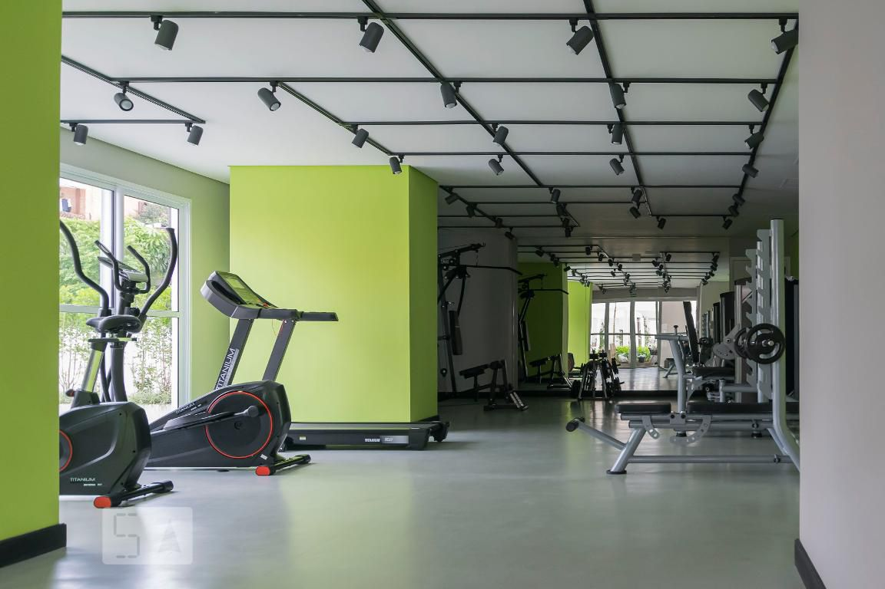

Atualizaçoes de melhorias no condomínio
Benfeitorias necessárias sao aquelas que conservam a coisa ou impedem sua deterioração. São benfeitorias com características de manutenção ou conserto. Benfeitorias Úteis sao as que aumentam ou facilitam o uso do imóvel, como, por exemplo, a instalação de hidrômetros individuais ou sistema de segurança. Ou seja, benfeitorias que adicionam benefícios ao imóvel, ampliando assim a sua utilidade.